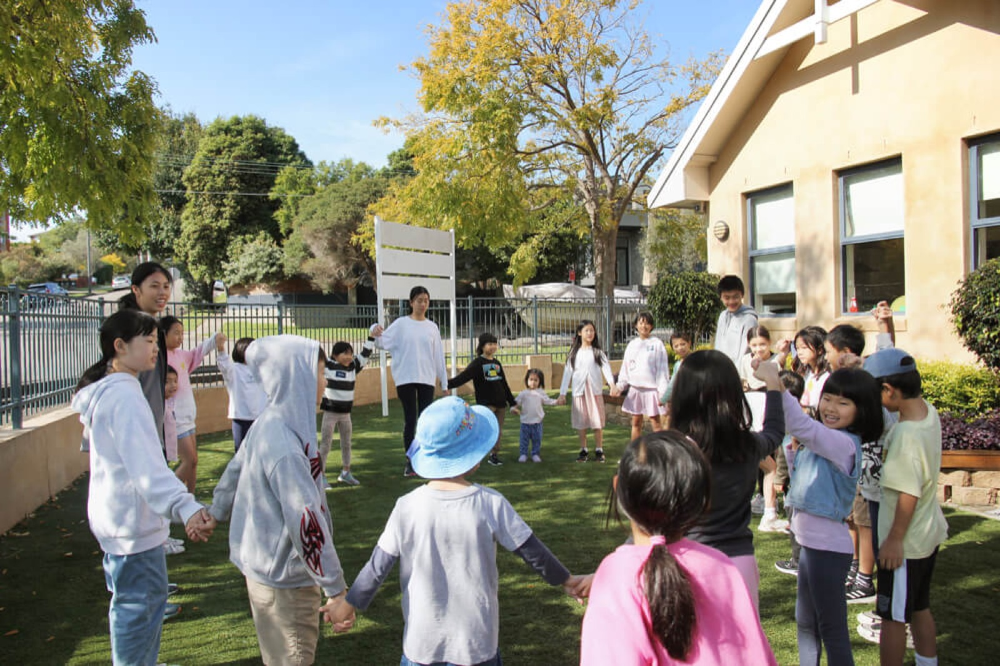
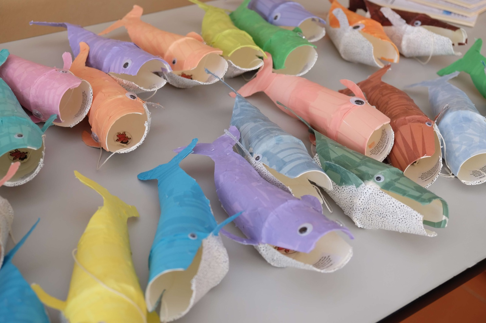

Children's Ministries
Sunday School
"Train up a child in the way he should go: And when he is old, he will not depart from it." Proverbs 22:6
At Sunday School, children are divided by age to learn lessons taught from the bible appropriate to their level. These classes run concurrently with the Sunday Worship Service.
- When
- 10:30am every Sunday (classes run concurrently with the Sunday Sermon)
- Where
- Children are dismissed from the Sunday Worship Service to various Sunday School rooms.
Kids Club
Kids Club is an event held every 2nd & 4th Saturday of the month during the School Term for children from Years K–6.
At Kids Club, children come together to learn lessons taught from the bible, which is further supplemented by craft activities, games and singing. Afternoon tea is provided and there are prizes to be won. Transport is available on request.

View Invitation- When
- 3-5pm every 2nd & 4th Saturday of the month excluding school holidays
- Where
- Sydney B-P Church
Vacation Bible Club
Vacation Bible Club (VBC) is a 3-day event held once a year for children from Years K–6. The purpose of VBC is to teach the bible to children in a fun and enjoyable manner.
At VBC, children come together to learn lessons taught from the bible, which is further supplemented by quizzes, craft activities, games and singing. There is a Puppet Show featured as well.

Stay Tuned!- When
- Time: 10am–3pm
Dates: April 15th–17th - Where
- Sydney B-P Church
Code of Conduct
Protecting the health & safety of our children.
Children are an important and valued part of our Church family. We take seriously the need to provide a safe and loving place for children to learn and play.
It is mandatory for anyone who holds a leadership role in Sydney Bible-Presbyterian Church or is involved with the care of children under 18 to adhere to our Code of Conduct.